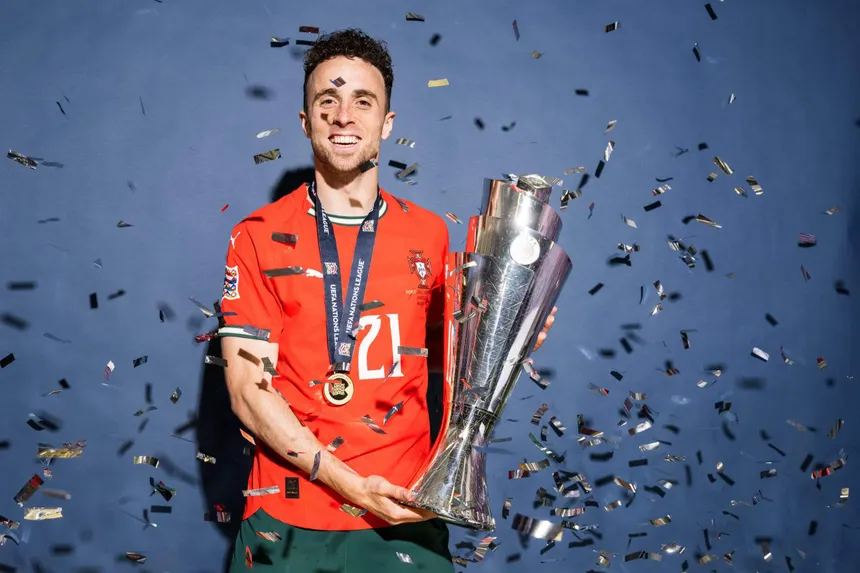

Diogo Jota, whose full name is Diogo José Teixeira da Silva, was born on December 4, 1996, in Massarelos. He grew up in Portugal and developed a passion for football at a young age, eventually starting his professional career with Paços de Ferreira. His talent earned him a move to Atlético Madrid, although he gained most of his early experience on loan at FC Porto. Jota later became well known during his time at Wolverhampton Wanderers F.C., where he helped the team rise to the Premier League, before joining Liverpool F.C., where he plays as a forward and is admired for his speed, intelligence, and goal-scoring ability.Match played: 395
Goal: 147
Assist: 65
Total international goals: 14
Portugal national team: 10 assists
Diogo Jota began rising as a promising talent in the 2016-17 season with FC Paços de Ferreira, but his real breakthrough came after joining Wolverhampton Wanderers in 2017. There, he played a key role in helping the team earn promotion to the Premier League and soon established himself as a consistent goal scorer against top competition. His performances at Wolves gained widespread attention, leading to a major move to Liverpool FC in 2020, where he quickly proved his quality by scoring important goals and cementing his place as a top-level forward.
Total major trophies: 6
4 with Liverpool
1 with Wolves
1 with Portugal
Tragically, this remarkable career was cut short when Jota died on 3 July 2025 in a car accident in Zamora, Spain, an event that shocked the football world. He was just 28 years old, and the accident also claimed the life of his younger brother, André. His passing came only days after his wedding, leaving fans and teammates mourning one of the most clutch and exciting forwards of his generation.